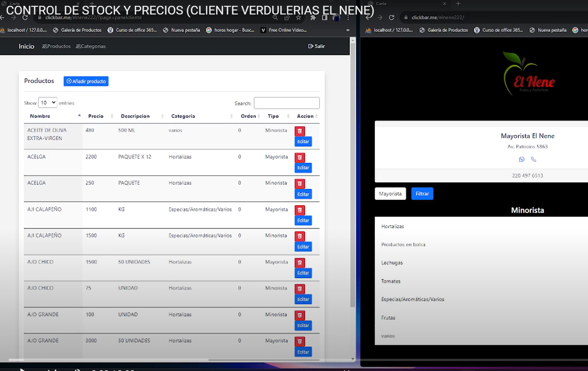

Alimentos para Mascotas

En este proyecto, me encargué de la maquetación utilizando WordPress y Elementor,
además de la creación de un tema personalizado.
También configuré varios plugins e integré pasarelas de pago para comercio electrónico.
Ver
Corralon de Materiales

En este proyecto, se trabajó en la tienda de productos, permitiendo la compra individual con acceso
al pedido a través de WhatsApp. Además, se configuraron plugins en WordPress. Gracias a estas
mejoras, se optimizó la experiencia en usuarios.
Ver
Control de Stock ABM

En este proyecto, utilicé tecnologÃas como HTML y CSS con un entorno de Responsive Web Design, el
cual sigo actualizando constantemente.
También implementé funcionalidades utilizando SQL y PHP, logrando utilizacion en comercios.
Ver